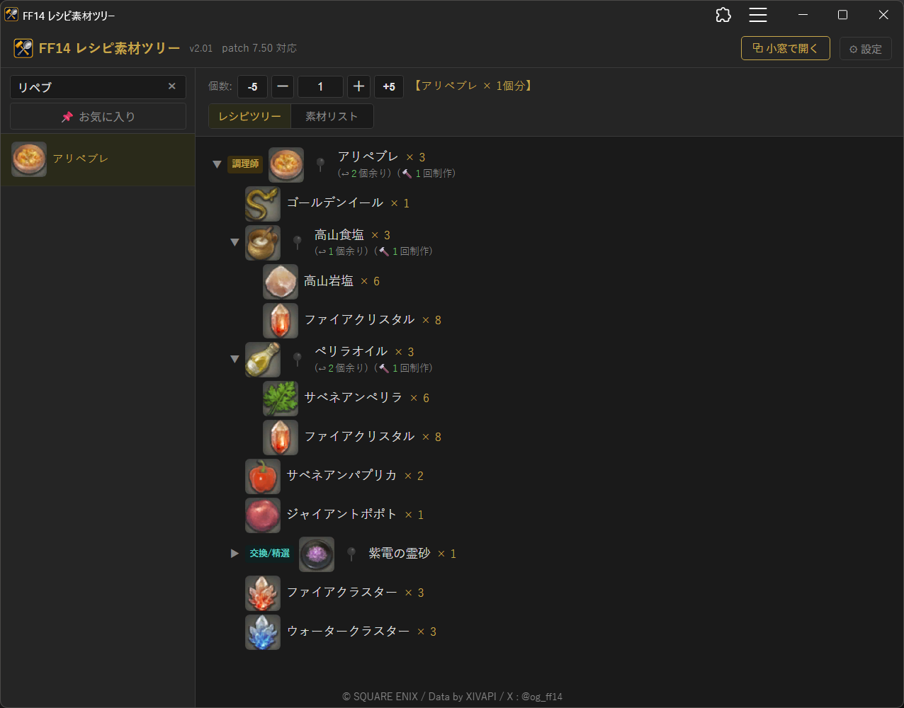
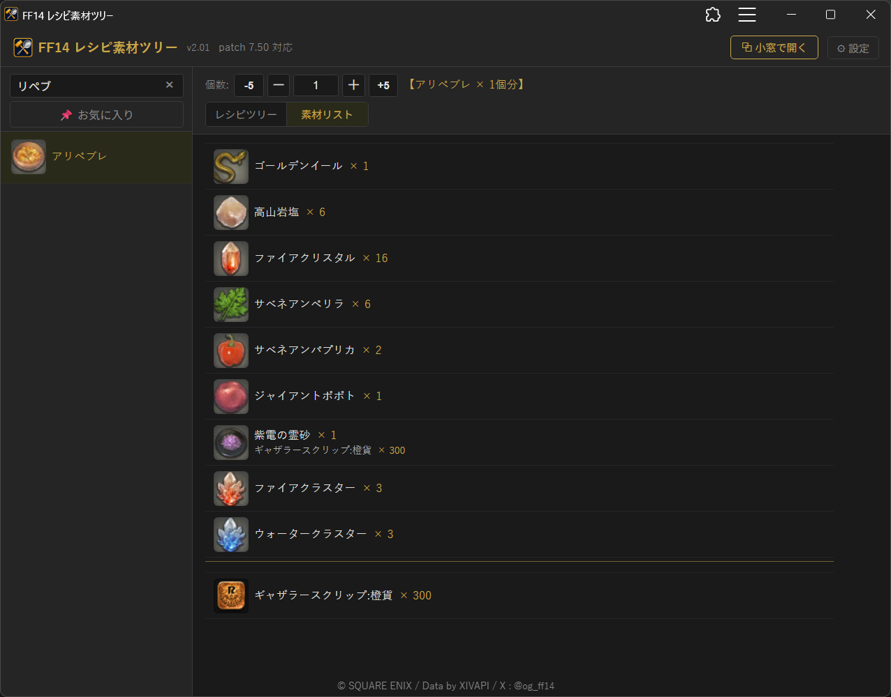
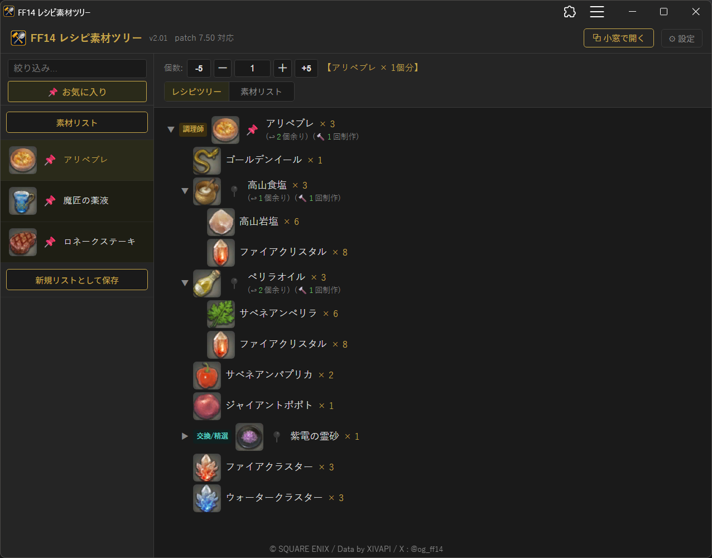
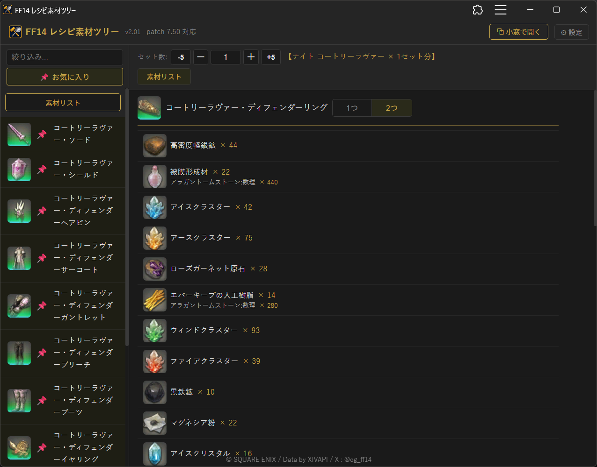
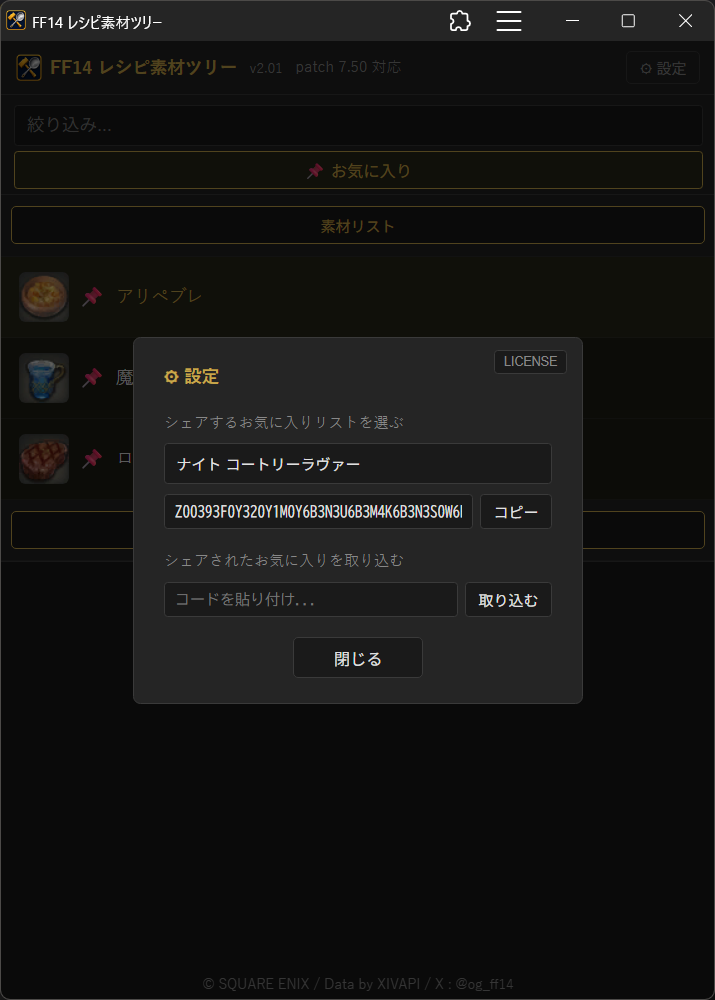
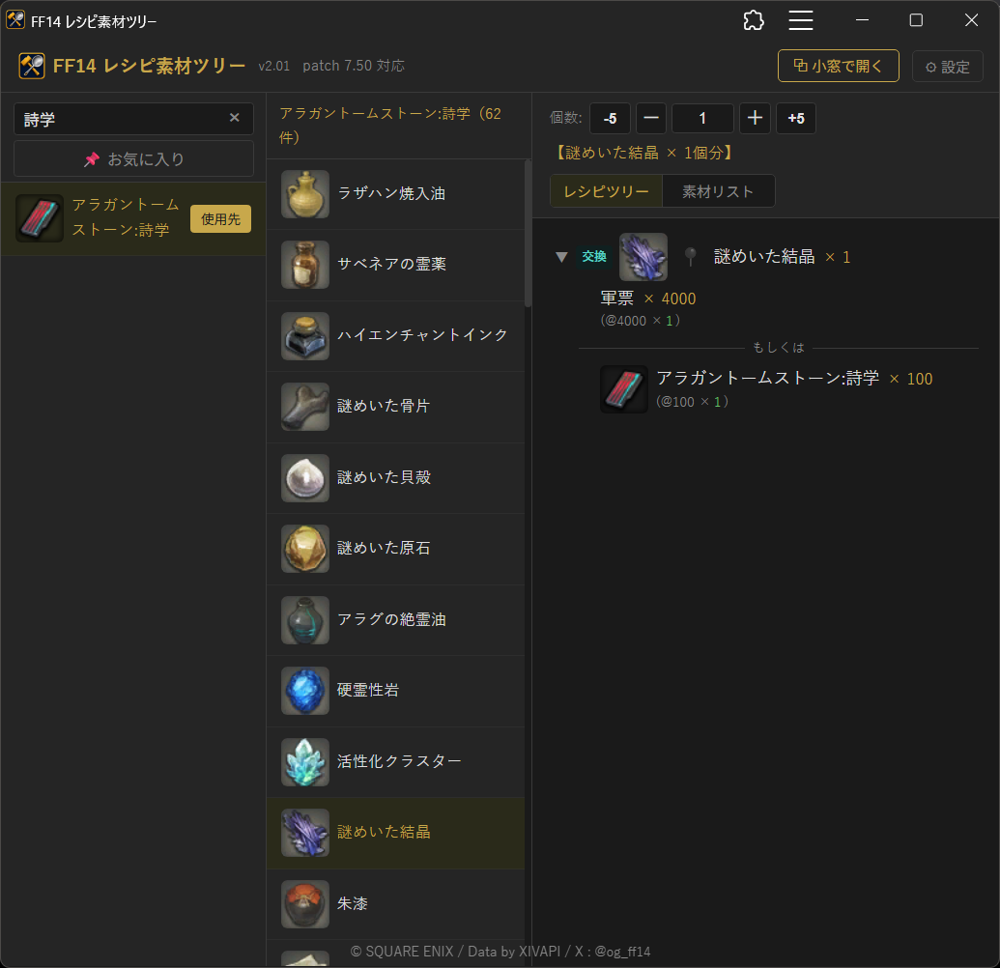
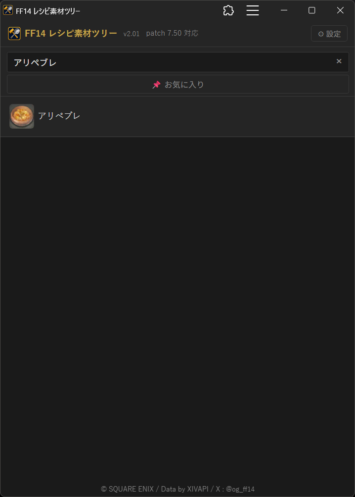
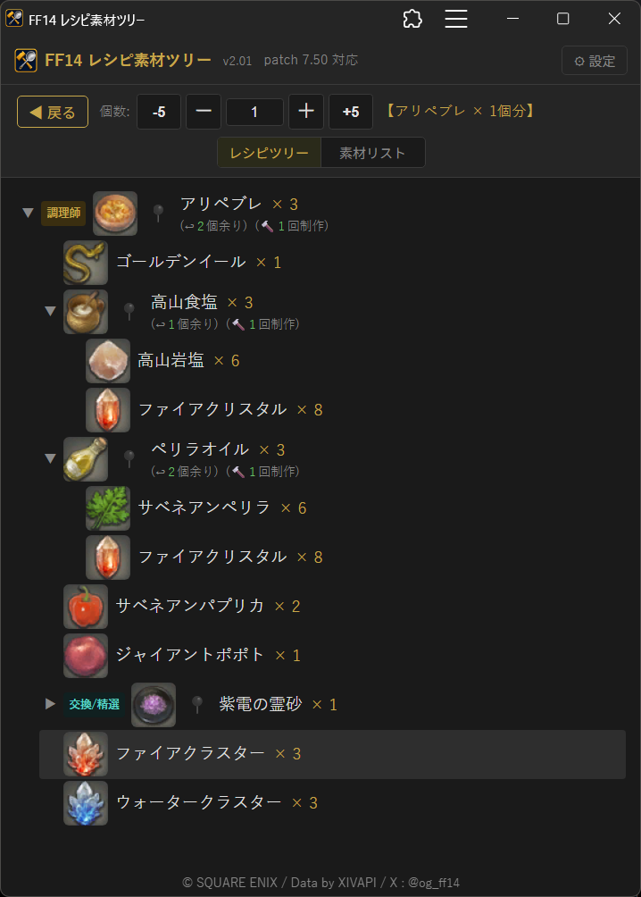
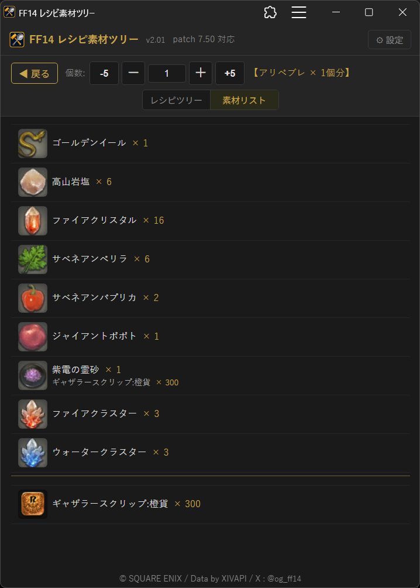
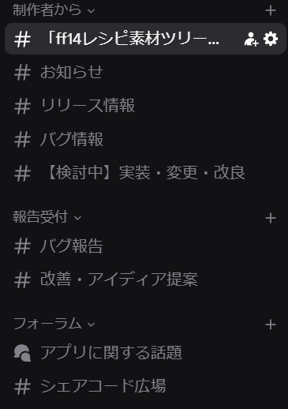

ゲーム「Final Fantasy XIV Online」のアイテム制作に必要な情報を手軽に調べるアプリです。
ブラウザーさえあればどなたでも、スマホでも PC でもご利用いただけます。
以下の URL から起動。ホーム画面に追加すること (PWA) もできます。(iPhone は Safari からのみ追加可能)
↓
https://jogu6.github.io/ffxiv-recipe/
探したいアイテム名を(一部でも)入力すると、対象アイテムがリストアップ。
選択すると、それを制作するのに必要な素材がツリー表示されます。

ツリー表示のほか、素材リストに切り替えも可能。

よく見るアイテムは「お気に入りリスト」を作成、そこに追加して簡単に後から参照できます。

作成したお気に入りリストに登録されている全アイテムの素材リストも表示可能。
指輪アイテムが含まれていれば、指輪 1 つ分の素材リストか、2 つ分の素材リストかを選択できます。

作成したお気に入りリストは、設定画面から「シェアコード」を発行、そのコードでバックアップとしてメモ帳に残したり、他の端末へ反映したり、お仲間にシェアすることもできます。
https://discord.com/channels/1516679768978886687/1516701219828138054 で公開したり、拾ってきたり。

そのアイテムから何が作れるか?
いわゆる「逆引き」機能もあります。

スマホにも対応しています。(レスポンシブデザイン)



バグ報告、ご感想、ご提案、その他お問い合わせは
X ( https://x.com/og_ff14 ) と、下記 Discord で受け付けています。
専用 Discord サーバーを開設しています。
以下の URL から、ぜひご参加ください。
↓
こちらから
